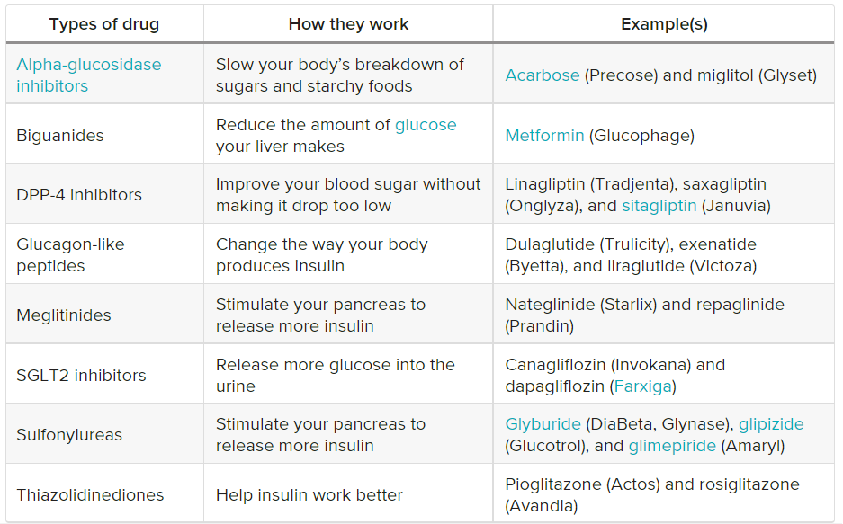

Treatment Of Diabetes
Doctors treat diabetes with a few different medications. Some of these drugs are taken by mouth, while others are available as injections.
Type 1 Diabetes
Insulin is the main treatment for type 1 diabetes. It replaces the hormone your body isn’t able to produce.
There are four types of insulin that are most commonly used. They’re differentiated by how quickly they start to work, and how long their effects last:
- Rapid-acting insulin starts to work within 15 minutes and its effects last for 3 to 4 hours.
- Short-acting insulin starts to work within 30 minutes and lasts 6 to 8 hours.
- Intermediate-acting insulin starts to work within 1 to 2 hours and lasts 12 to 18 hours.
- Long-acting insulin starts to work a few hours after injection and lasts 24 hours or longer.
Type 2 Diabetes
Diet and exercise can help some people manage type 2 diabetes. If lifestyle changes aren’t enough to lower your blood sugar, you’ll need to take medication.
These drugs lower your blood sugar in a variety of ways:
You may need to take more than one of these drugs. Some people with type 2 diabetes also take insulin.
Gestational Diabetes
You’ll need to monitor your blood sugar level several times a day during pregnancy. If it’s high, dietary changes and exercise may or may not be enough to bring it down.
According to the Mayo Clinic, about 10 to 20 percent of women with gestational diabetes will need insulin to lower their blood sugar. Insulin is safe for the growing baby.
The Bottom Line
The drug or combination of drugs that your doctor prescribes will depend on the type of diabetes you have — and its cause. Check out this list of the various medications that are available to treat diabetes.